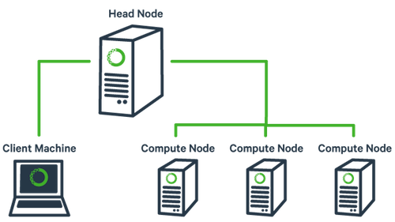

Cluster
Última atualização: 2020-03-02
| Nó | Núcleos | Threads | Processador | Instruções | Freq | Cache | RAM | GPU |
|---|---|---|---|---|---|---|---|---|
| 1 | 6 | 12 | Core i7-9750H | avx2, sse4.2, fma3 | 4 GHz | 12 MB L3 | 8 GB | NVIDIA GeForce GTX 1050 3GB |
| 2 | 4 | 8 | Core i7-2630QM | avx, sse4.2 | 2.6 GHz | 6 MB L3 | 8 GB | |
| 3 | 4 | 8 | Core i7-2630QM | avx, sse4.2 | 2.6 GHz | 6 MB L3 | 6 GB | |
| 4 | 2 | 4 | Core i7-7500U | avx2, sse4.2, fma3 | 3.5 GHz | 4 MB L3 | 16 GB | NVIDIA GeForce 940MX 4GB |
| 5 | 2 | 4 | Core i7-3520M | avx, sse4.2 | 3.6 GHz | 4 MB L3 | 8 GB | NVIDIA GeForce GT 635M 2GB |
| 6 | 2 | 2 | Core2Duo T7200 | ssse3 | 2 GHz | 4 MB L2 | 2 GB | |
| 7 | 2 | 2 | Core2Duo T7200 | ssse3 | 2 GHz | 4 MB L2 | 2 GB | |
| 8 | 2 | 2 | Core2Duo T7250 | ssse3 | 2 GHz | 2 MB L2 | 3 GB | |
| 9 | 4 | 4 | AMD A6-1450 | avx, sse4.2 | 1 GHz | 2 MB L2 | 4 GB | Radeon HD 8250 |
| 10 | 4 | 4 | Allwinner H3 ARM Cortex-A7 | ARMv7-A, Neon, VFPv4 | 1.2 GHz | 0,5 MB L2 | 0,5 GB | Mali400 MP2 @ 600 Mhz |
| master | 1 | 2 | Atom N450 | ssse3 | 1.6 GHz | 0,5 MB L2 | 2 GB |
Outras specs: xubuntu 18.04.3 lts, 10/100M ethernet

Aspecto físico

Instalação e configuração
O hostname coloca na hora que instala o SO. Ou então, caso já exista e o ssh (dropbear) esteja rodando, talvez seja uma boa idéia desinstalar para evitar problemas:
sudo apt autoremove --purge dropbear
sudo reboot
Após o boot (exemplo para o node01):
sudo hostname node01
Alterar também o que está em /etc/hostname e colocar node01
sudo nano /etc/hostname
Em todos os nós
Acrescentar todos nós a /etc/hosts:
sudo nano /etc/hosts
no lugar de "n" completar o ip:
192.168.n.nnn node01
192.168.n.nnn node02
192.168.n.nnn node03
...
192.168.n.nnn master
Instalar ssh (dropbear) e htpdate:
sudo apt install -y dropbear ntpdate
No nó de login
Entrar no nó de login (ssh), e:
sudo mkdir /scratch
sudo chown nobody.nogroup -R /scratch
sudo chmod 777 -R /scratch
Servidor NFS
sudo apt install -y nfs-kernel-server
Configuração sudo nano /etc/exports
/scratch 192.168.2.1/24(rw,sync,no_subtree_check,no_root_squash)
Ativar
sudo exportfs -rav
Nos demais nós
Entrar com ssh, e:
sudo apt install -y nfs-common
sudo mkdir /scratch
sudo chown nobody.nogroup /scratch
sudo chmod -R 777 /scratch
Configurar sudo nano /etc/fstab:
master:/scratch /scratch nfs defaults,_netdev,noatime 0 0
Montar e conferir:
sudo mount /scratch
ls /scratch
Voltando para o nó de login
Instalar o slurm
sudo apt install -y slurm-wlm
sudo slurmd -V
cd /etc/slurm-llnl
sudo cp /usr/share/doc/slurm-client/examples/slurm.conf.simple.gz .
sudo gzip -d slurm.conf.simple.gz
sudo mv slurm.conf.simple slurm.conf
Criar o diretório slurm spool:
sudo mkdir /var/spool/slurm-llnl
sudo chown -R slurm.slurm /var/spool/slurm-llnl
Criar o diretório slurm pid:
sudo mkdir /var/run/slurm-llnl/
sudo chown -R slurm.slurm /var/run/slurm-llnl
Configurar sudo nano /etc/slurm-llnl/slurm.conf (as linhas abaixo mostram apenas algumas configurações possíveis):
ControlMachine=master
ControlAddr=192.168.n.nnn
SelectType=select/cons_res
SelectTypeParameters=CR_CPU
ClusterName=orion
SlurmUser=x
NodeName=node01 NodeAddr=192.168.n.nnn CPUs=4 State=UNKNOWN
NodeName=node02 NodeAddr=192.168.n.nnn CPUs=8 State=UNKNOWN
NodeName=node03 NodeAddr=192.168.n.nnn CPUs=8 State=UNKNOWN
...
NodeName=master NodeAddr=192.168.n.nnn CPUs=2 State=UNKNOWN
PartitionName=mycluster Nodes=node[01-07] Default=YES MaxTime=INFINITE State=UP
# comentar o NodeName e PartitionName existente
Configurar sudo nano /etc/slurm-llnl/cgroup.conf:
CgroupMountpoint="/sys/fs/cgroup"
CgroupAutomount=yes
CgroupReleaseAgentDir="/etc/slurm-llnl/cgroup"
AllowedDevicesFile="/etc/slurm-llnl/cgroup_allowed_devices_file.conf"
ConstrainCores=no
TaskAffinity=no
ConstrainRAMSpace=yes
ConstrainSwapSpace=no
ConstrainDevices=no
AllowedRamSpace=100
AllowedSwapSpace=0
MaxRAMPercent=100
MaxSwapPercent=100
MinRAMSpace=30
Configurar sudo nano /etc/slurm-llnl/cgroup_allowed_devices_file.conf:
/dev/null
/dev/urandom
/dev/zero
/dev/sda*
/dev/cpu/*/*
/dev/pts/*
/scratch*
Copiar os arquivos anteriores para /scratch para usar nos outros nós:
cd /etc/slurm-llnl/
sudo cp slurm.conf cgroup.conf cgroup_allowed_devices_file.conf /scratch
sudo cp /etc/munge/munge.key /scratch
Iniciar
sudo systemctl enable munge
sudo systemctl start munge
sudo systemctl enable slurmd
sudo systemctl start slurmd
sudo systemctl enable slurmctld
sudo systemctl start slurmctld
Conferir
slurmctld
x@master:~$ systemctl status slurmctld.service
● slurmctld.service - Slurm controller daemon
Loaded: loaded (/lib/systemd/system/slurmctld.service; enabled; vendor preset: enabled)
Active: active (running) since Mon 2019-11-18 09:57:16 -03; 18min ago
Docs: man:slurmctld(8)
Process: 2683 ExecStart=/usr/sbin/slurmctld $SLURMCTLD_OPTIONS (code=exited, status=0/SUCCES
Main PID: 2685 (slurmctld)
Tasks: 7 (limit: 2293)
CGroup: /system.slice/slurmctld.service
└─2685 /usr/sbin/slurmctld
Nov 18 09:57:16 master systemd[1]: Starting Slurm controller daemon...
Nov 18 09:57:16 master systemd[1]: Started Slurm controller daemon.
scontrol
x@master:~$ scontrol show node
NodeName=master Arch=x86_64 CoresPerSocket=1
CPUAlloc=0 CPUErr=0 CPUTot=2 CPULoad=0.70
AvailableFeatures=(null)
ActiveFeatures=(null)
Gres=(null)
NodeAddr=192.168.n.nnn NodeHostName=master Version=17.11
OS=Linux 5.0.0-36-generic #39~18.04.1-Ubuntu SMP Tue Nov 12 11:09:50 UTC 2019
RealMemory=1 AllocMem=0 FreeMem=690 Sockets=2 Boards=1
State=IDLE ThreadsPerCore=1 TmpDisk=0 Weight=1 Owner=N/A MCS_label=N/A
BootTime=2019-11-18T08:15:16 SlurmdStartTime=2019-11-18T09:57:15
CfgTRES=cpu=2,mem=1M,billing=2
AllocTRES=
CapWatts=n/a
CurrentWatts=0 LowestJoules=0 ConsumedJoules=0
ExtSensorsJoules=n/s ExtSensorsWatts=0 ExtSensorsTemp=n/s
(...)
sinfo
x@master:~$ sinfo
PARTITION AVAIL TIMELIMIT NODES STATE NODELIST
mycluster* up infinite 7 idle node[01-07]
Se precisar reiniciar:
sudo systemctl restart systemd-networkd.service
sudo systemctl restart munge
sudo systemctl restart slurmd
sudo systemctl restart slurmctld
Nos nós de execução
Entrar em cada um com ssh e instala o cliente slurm:
sudo apt install -y slurmd slurm-client
Copiar os arquivos de configuração de /scratch
sudo cp /scratch/munge.key /etc/munge/munge.key
sudo cp /scratch/slurm.conf /etc/slurm-llnl/slurm.conf
sudo cp /scratch/cgroup* /etc/slurm-llnl
sudo systemctl restart munge
sudo systemctl restart slurmd
Iniciar
sudo systemctl enable munge
sudo systemctl start munge
sudo systemctl enable slurmd
sudo systemctl start slurmd
Conferir
munge
x@node01:~$ munge -n | unmunge
STATUS: Success (0)
ENCODE_HOST: node01 (127.0.1.1)
ENCODE_TIME: 2019-11-18 10:23:31 -0300 (1574083411)
DECODE_TIME: 2019-11-18 10:23:31 -0300 (1574083411)
TTL: 300
CIPHER: aes128 (4)
MAC: sha256 (5)
ZIP: none (0)
UID: x (1000)
GID: x (1000)
LENGTH: 0
slurmd
x@node01:~$ sudo slurmd -C
NodeName=node01 CPUs=4 Boards=1 SocketsPerBoard=1 CoresPerSocket=2 ThreadsPerCore=2 RealMemor=15906
UpTime=2-23:16:18
Testando o cluster
No nó de login:
x@master:~$ sinfo
PARTITION AVAIL TIMELIMIT NODES STATE NODELIST
mycluster* up infinite 7 idle node[01-07]
Rodando o comando hostname em 7 nós:
x@master:~$ srun --nodes=7 hostname
node04
node07
node02
node05
node01
node03
node06
Rodando 30 processos:
x@master:~$ srun --ntasks=30 hostname
node01
node01
node01
node01
node07
...
node03
node03
Combinando nós e processos:
x@master:~$ srun --nodes=4 --ntasks-per-node=2 hostname
node01
node01
node04
node03
node02
node03
node02
node04
Rodando somente em determinados nós
x@master:~$ srun --nodelist=node01,node07 --ntasks=8 hostname
node01
node07
node01
node07
node01
node07
node07
node01
squeue
x@master:~$ squeue
JOBID PARTITION NAME USER ST TIME NODES NODELIST(REASON)
Agendar um arquivo de lote /scratch/helloworld.sh
#!/bin/bash
#SBATCH --nodes=1
#SBATCH --ntasks-per-node=1
#SBATCH --partition=mycluster
cd $SLURM_SUBMIT_DIR
echo "Hello, World!" > helloworld.txt
echo "OK."
Rodar
x@master:/scratch$ sbatch helloworld.sh
Submitted batch job 128
Saídas
slurm-128.out
OK.
helloworld.txt
Hello, World!
Informações adicionais
Para verificar se todos os nós estão com os diretórios scratch montados, talvez uma maneira seja:
x@master:~$ cd /scratch/
x@master:/scratch$ touch teste.txt
x@master:/scratch$ srun --nodes=7 ls /scratch/teste.txt
/scratch/teste.txt
/scratch/teste.txt
/scratch/teste.txt
/scratch/teste.txt
/scratch/teste.txt
/scratch/teste.txt
/scratch/teste.txt
x@master:/scratch$ rm teste.txt
Para montar todos os diretórios /scratch de uma vez:
x@master:/scratch$ srun --nodes=7 sudo mount /scratch
Mudar o estado de um ou mais nós:
x@master:/scratch$ sudo scontrol update nodename=node[04-05] state=FUTURE
x@master:/scratch$ sinfo
PARTITION AVAIL TIMELIMIT NODES STATE NODELIST
mycluster* up infinite 5 idle node[01-03,06-07]
x@master:/scratch$ sudo scontrol update nodename=node[04-05] state=RESUME
x@master:/scratch$ sinfo
PARTITION AVAIL TIMELIMIT NODES STATE NODELIST
mycluster* up infinite 7 idle node[01-07]
Reiniciar um nó:
x@node01:~$ sudo /etc/init.d/slurmd stop
[ ok ] Stopping slurmd (via systemctl): slurmd.service.
x@node01:~$ sudo /etc/init.d/slurmd startclean
* Starting slurm compute node daemon slurmd [ OK ]
Mostrar informações do slurmd
x@node01:~$ scontrol show slurmd
Active Steps = NONE
Actual CPUs = 4
Actual Boards = 1
Actual sockets = 1
Actual cores = 2
Actual threads per core = 2
Actual real memory = 15906 MB
Actual temp disk space = 119640 MB
Boot time = 2019-11-18T10:00:07
Hostname = node01
Last slurmctld msg time = 2019-11-18T10:31:12
Slurmd PID = 12225
Slurmd Debug = 3
Slurmd Logfile = /var/log/slurm-llnl/slurmd.log
Version = 17.11.2
REFERÊNCIAS
- https://medium.com/@glmdev/building-a-raspberry-pi-cluster-784f0df9afbd
- https://www.linuxwave.info/2019/10/installing-slurm-workload-manager-job.html
- https://slurm.schedmd.com/
- https://www.eidos.ic.i.u-tokyo.ac.jp/~tau/lecture/parallel_distributed/2016/html/fix_broken_slurm.html
Last edited: 2020-03-02 16:31:24